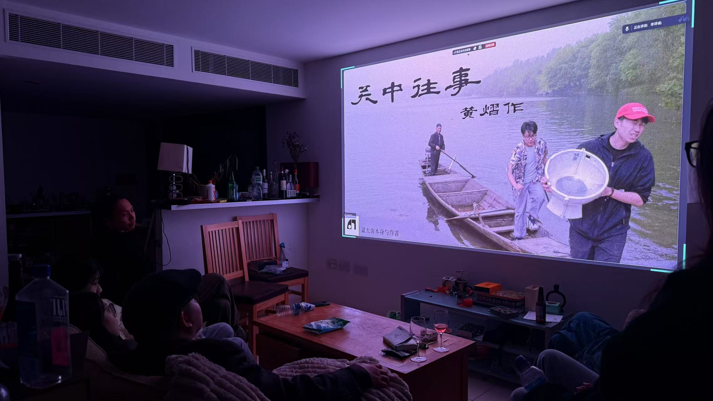
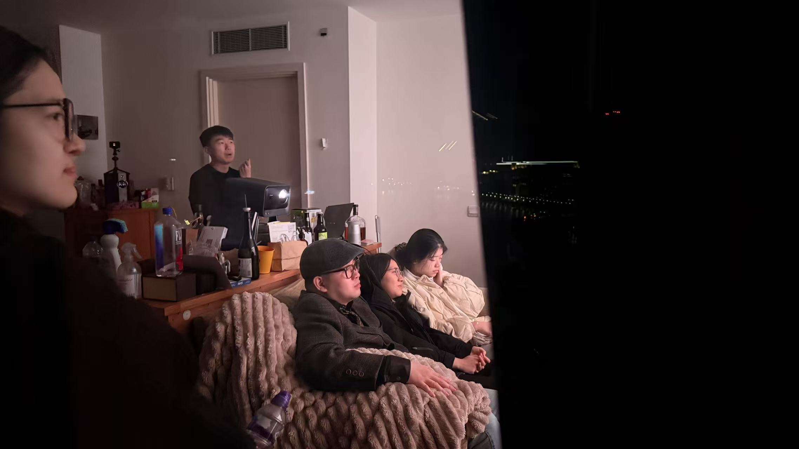
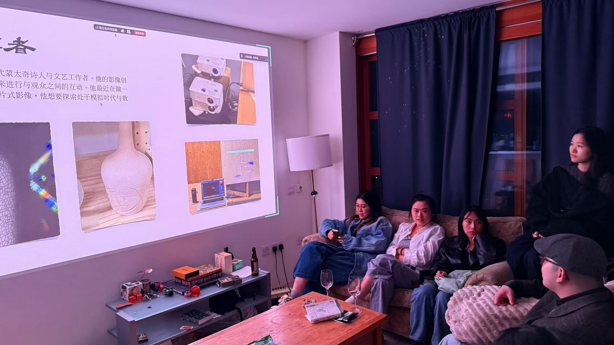
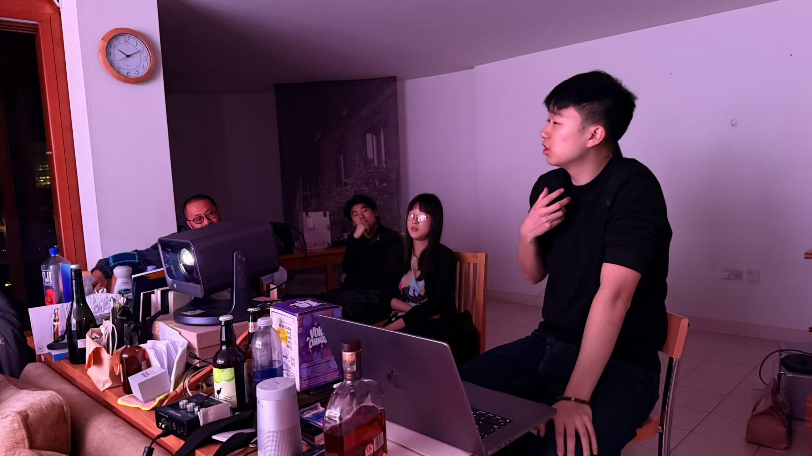

ABOUT
Private Screening
Personal Talk
Producer: Yi Huang
Content: Screening The Experience at Mo Ming Tang, I start from my personal experience in digital media art, follow the path to new media and pure art, touch on China’s art education system and the distinction between design and art, recall my exploration of pure art in the UK, and further discuss the blurry boundary—like a "glitch"—between literary and artistic workers and artists. All these thoughts are the feelings from my heart, which I wish to share one by one.

Format: Dialogue & Communication
Tech: Courage
私人放映
个人讲座系列
制作人：黄熠
于莫名堂展映《关中往事》，余自数字媒体艺术之亲历发轫，循新媒体、纯艺术之径，及中国艺术教育之制、设计与艺术之辨，复忆英伦探寻纯艺术之踪，更论文艺工作者与艺术家之界如 “卡 BUG” 般难明，凡此种种，皆为吾心之所感，愿一一道之。




自检：很开心，来的都是朋友
Self Reflection:
© 2026 All Rights Reserved.